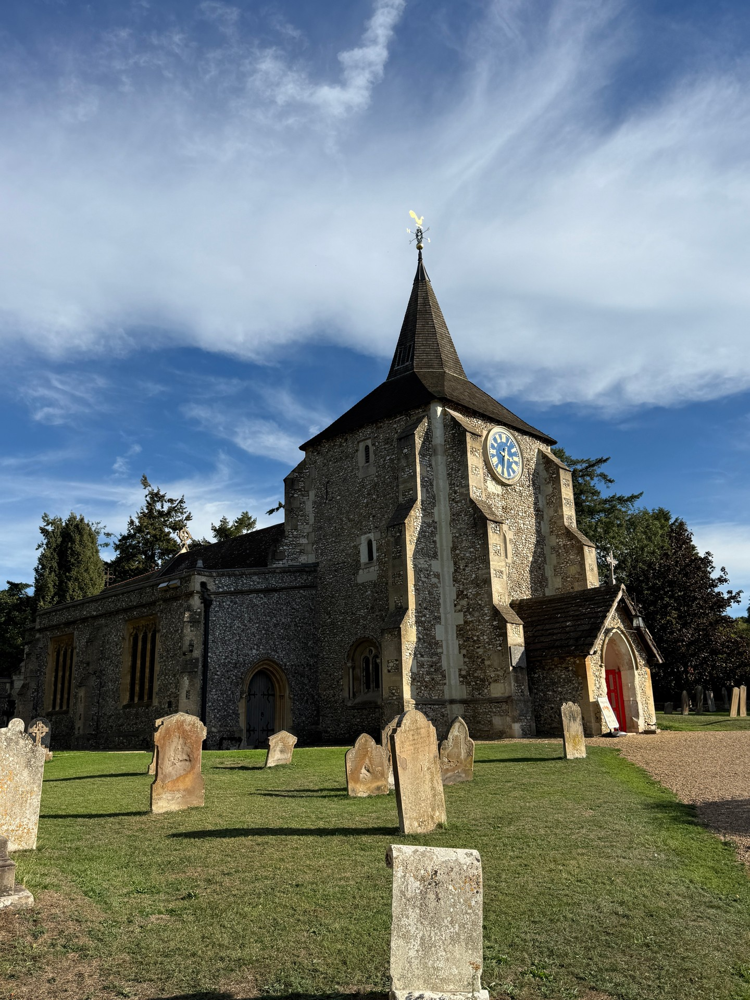
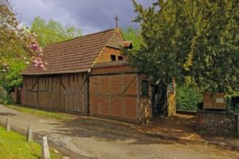

Plan a visit
Plan a Visit
Whether you’re joining us for worship, exploring our historic church, walking through the Surrey Hills or simply passing through, you are very welcome.
St Michael & All Angels
Mickleham & Westhumble

Come as you are
First visit
Whether you’re joining a service for the first time or simply looking around, you are welcome at St Michael’s. Take your time to settle in, sit quietly, and ask someone if you need help.
You can join in with worship as much or as little as feels comfortable.
What to expectTwo places, one parish
Find us
Our church is in Mickleham village; our Chapel of Ease is in neighbouring Westhumble. Choose your destination before setting out.
St Michael & All Angels Church
Old London RoadMickleham, Dorking
Surrey RH5 6DUOpen in Google Maps — Mickleham church (opens in a new tab)
Chapel of Ease
Crabtree LaneWesthumble
Surrey RH5 6BGOpen in Google Maps — Westhumble Chapel (opens in a new tab)
See where we are
Open both places together on Google Maps to see how the church and chapel relate to one another, and explore a walking route between them.
Look a little closer
Church guide & history
Discover the architecture, features and stories of St Michael’s. Our church building pages offer an introduction to a place shaped by many generations of parish life.
Our history
The parish history traces the building’s development, its historic features and its continuing life as a place of worship and community.
Our historyIn the Surrey Hills
Walking & exploring
St Michael’s is part of the landscape of Mickleham and Box Hill. If you encounter the church while exploring the Surrey Hills, you are very welcome.
Along the Box Hill Hike
The National Trust’s Box Hill Hike passes through Mickleham churchyard. It is a challenging circular walk with steep climbs and steps; check the official route and conditions before setting out.
Box Hill Hike – National Trust (opens in a new tab)Your journey
Getting here
Check current journey information before travelling. Mickleham church and Westhumble Chapel are separate destinations.
By car
For Mickleham church, use Old London Road, RH5 6DU. For the Chapel of Ease, use the Westhumble location above, RH5 6BG.
Please contact the parish to confirm parking or access arrangements rather than assuming on-site facilities.
Choose your destinationBy train
Box Hill & Westhumble station is on Westhumble Street in Westhumble. For the chapel, plan your onward journey within Westhumble; for Mickleham church, allow for a separate onward walk or connection.
National Rail station & journey information (opens in a new tab)By bus
The 465 links Kingston, Surbiton, Leatherhead and Dorking and serves the Mickleham Church stop. It also serves Westhumble Street; for the Chapel of Ease, check your onward route from that stop to the chapel.
Check the current 465 route & arrivals (opens in a new tab)On foot
Plan a walking route to the church or chapel using the location links above. If you’re combining a visit with Box Hill, follow the National Trust’s route advice and allow for the terrain.
Walking & exploring
Our parish in Westhumble
The Chapel of Ease, Westhumble
Our parish also includes the Chapel of Ease in Westhumble, a quieter setting for worship and prayer and an important part of our parish community.
The parish’s earlier history describes this weatherboarded building as a former barn. Explore the chapel page, check the Calendar for current services, and contact the parish to confirm access before making a special journey.